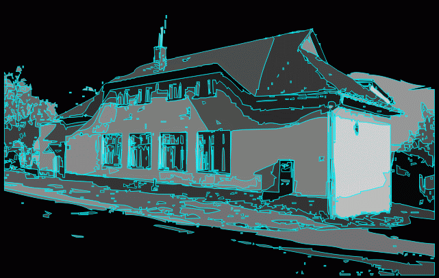

Skautská základna Pohledec
u Nového Města na Moravě
Spojení
Nejblíže je to vlakem, a to buď přes Tišnov a Bystřici nad Pernštejnem, nebo od Žďáru nad Sázavou, vystoupit ve stanici Nové Město na Moravě – nádraží. Komu se z Nového Města do Pohledce nechce pěšky, může si to zkrátit autobusem. Jinak autobusové spojení do Nového Města je také celkem dobré, ale autobusové nádraží je od Pohledce asi o kilometr dále.